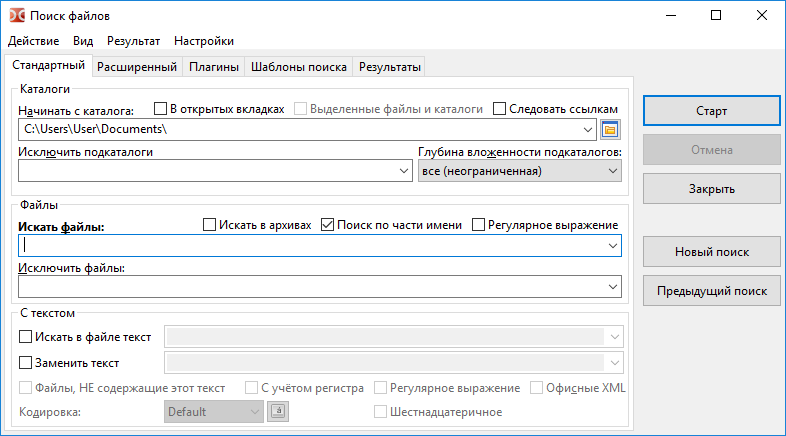

Возможности инструмента поиска сгруппированы по вкладкам, мы можем переключаться по вкладкам с помощью комбинаций клавиш Alt+1...Alt+4.
Кроме того, к некоторым функциям можно получить доступ из главного меню этого окна.
На этой вкладке мы можем искать файлы по имени и их содержимому.

В поле Начинать с каталога указываем начальный каталог для поиска, по умолчанию будет использоваться текущий каталог активной панели.
Дополнительные параметры для указания места поиска файлов:
В открытых вкладках – будут использоваться только каталоги открытых вкладок (вкладки активной и неактивной панелей).
Выделенные файлы и каталоги – если включено, то поиск будет вестись только среди выделенных в активной панели файлов и папок. Если в файловой панели есть выделенные файлы/папки, то этот параметр будет включен автоматически.
Следовать ссылкам – если будет найдена символьная ссылка на каталог, целевой каталог будет прочитан и использован, иначе эта символьная ссылка будет считаться обычным файлом.
Исключить подкаталоги – список каталогов, которые нужно исключить из поиска, здесь мы можем указать имена папок и относительные или абсолютные(Бета-версия) пути.
Глубина вложенности подкаталогов может принимать значения:
только текущий,
число уровней (на выбор от 1 до 100),
все (неограниченная).
Эта настройка управляет глубиной "погружения" по дереву каталогов во время поиска. Указав "только текущий", мы ограничим поиск папкой, указанной в поле "Начинать с каталога" (подкаталоги просматриваться не будут).
В поле Искать файлы задаём маску, по которой будет осуществляться поиск. Или мы можем просто указать имя файла или его часть.
Дополнительные параметры:
Искать в архивах – если включено, Double Commander дополнительно попытается прочитать содержимое всех архивов в каталоге(ах) поиска. Список поддерживаемых форматов зависит от добавленных архиваторных плагинов.
Поиск по части имени – необходимо отключить, если хотим использовать точное имя файла.
Регулярное выражение – если включено, можно использовать регулярные выражения.
Исключить файлы – список имён файлов, которые нужно исключить из поиска. Также поддерживаются маски.
Примечание: Искать файлы, Исключить файлы, Начинать с каталога и Исключить подкаталоги позволяют ввести несколько значений, разделённых точкой с запятой ";" (без пробелов). Если необходимо найти файл с точкой с запятой в имени, мы можем использовать регулярные выражения.
Если отмечено Искать в файле текст, во время поиска будет происходить просмотр содержимого файлов и в результат поиска попадут только содержащие указанный текст. Также во время поиска можно сразу заменить указанный текст на другой, включив Заменить текст и указав строку замены.
Дополнительные параметры:
Файлы, НЕ содержащие этот текст – заставляет программу показывать только те файлы, в содержимом которых не найден текст, указанный в поле Искать в файле текст.
С учётом регистра – указывает, что прописные буквы нужно отличать от строчных. Т.е. "Fallout" и "fallout" будут восприниматься как разные.
Шестнадцатеричное – поиск шестнадцатеричных символов (без учёта регистра, с пробелами между символами или без, например, "C0 C1 C2" или "c0c1c2").
Офисные XML – включает поиск в файлах Microsoft Office (DOCX, XLSX) и OpenOffice/LibreOffice (ODT, ODS).
Также можно указать кодировку (UTF, ISO, KOI, DOS, ANSI и т.д.), включить регулярные выражения.
Примечание о кодировке текста: Мы можем задать кодировку текста или использовать одно из специальных значений:
Default – зависит от операционной системы и выбранных языковых стандартов системы:
Windows: системная кодировка ANSI по умолчанию.
Linux и другие Unix-подобные системы: системная кодировка текста по умолчанию, в современных системах обычно используется UTF-8.
ANSI – системная кодировка ANSI по умолчанию (зависит от языковых стандартов системы).
OEM – системная кодировка OEM (DOS) по умолчанию (зависит от языковых стандартов системы).
Кнопка Кодировка () позволяет указать более одной кодировки.(Бета-версия)
Кнопка Старт запускает поиск, Отмена останавливает, а Закрыть закрывает окно поиска файлов.
Новый поиск – очищает поле результатов и позволяет запустить поиск заново (возможно, с другими условиями).
Предыдущий поиск – загружает параметры из предыдущего поиска (в текущей сессии, до закрытия Double Commander).
Если включено сохранение истории, то для удаления ненужных записей из истории полей ввода мы можем использовать Shift+Del.
Вкладка Расширенный позволяет указать дополнительные условия поиска файла: дата, время и возраст файла (по дате модификации), минимальный и максимальный размер файла, а также атрибуты.
Атрибуты файла можно указать вручную или используя небольшой помощник на кнопке Добавить (подробнее об использовании атрибутов файлов смотрите ниже). Кнопка Помощь открывает следующий подраздел этой страницы.
Также здесь можно задать поиск дубликатов файлов по следующим одному или нескольким критериям:
сравнить имена файлов;
сравнить размеры файлов;
сравнить хеши: будет использоваться контрольная сумма BLAKE2b (x64) или BLAKE2s;
сравнить содержимое файлов (побайтовое сравнение).
В результате будут показаны имена файлов, номер группы совпадающих файлов и расположение файлов. Также после передачи списка в панель мы можем использовать специальный режим выделения, где можно выбрать только дубликаты: Выделить группу и Снять выделение с группы в подменю Выделение (внутренние команды cm_MarkPlus и cm_MarkMinus).
Для поиска по атрибутам необходимо использовать шаблон, который определяет, какие атрибуты искать и их состояние (установлены ли они или сняты).
Одиночный атрибут представляется в следующем формате:
<атрибут>+ или <атрибут>-
Знак плюс означает, что у файл должен быть установлен этот атрибут, знак минус – наоборот, что у файла этот атрибут не должен быть установлен.
Возможные атрибуты представлены в таблице:
| Атрибуты в Windows | |
|---|---|
| Атрибут | Что обозначает |
a | архивный |
c | сжатый (сжатие NTFS) |
d | каталог |
e | зашифрованный (шифрование EFS) |
h | скрытый |
l | символьная ссылка |
p | разрежённый |
r | только для чтения |
s | системный |
t | временный |
| Атрибуты в Unix/Linux (права доступа) | |
|---|---|
| Права доступа | Что обозначает |
ur | пользователь (владелец): чтение |
uw | пользователь (владелец): запись |
ux | пользователь (владелец): выполнение |
gr | группа: чтение |
gw | группа: запись |
gx | группа: выполнение |
or | остальные: чтение |
ow | остальные: запись |
ox | остальные: выполнение |
us | установка ID пользователя во время выполнения (SUID) |
gs | установка ID группы во время выполнения (SGID) |
sb | бит сохранения задачи/закрепления в памяти (sticky bit) |
| Атрибуты в Unix/Linux (типы файлов) | |
|---|---|
| Типы файлов | Что обозначает |
b | блочное физическое устройство |
c | символьное физическое устройство |
d | каталог |
f | именованный канал (или буфер FIFO) |
l | символьная ссылка |
r | обычный файл |
s | сокет (socket)/доменное гнездо |
В Unix/Linux также можно использовать восьмеричное представление разрешений. Например, 0750 – то же самое, что и комбинация ur, uw, ux, gr и gx.
Некоторые атрибуты могут быть объединены в группу с отношением И, просто укажите один шаблон за другим.
Например: r+s+h+ соответствует файлам, у которых установлены все три атрибута: только для чтения, системный и скрытый.
Кроме того, такие группы атрибутов могут быть объединены вместе с отношения ИЛИ. Это делается с помощью символа "|" (вертикальная черта).
Например: r+|s+h+ соответствует файлам, у которых:
В шаблонах, объединённых в группу с отношением И, можно использовать оператор "не равно", добавив символ "!" в начале.
Например: !r+s+h+ соответствует файлам, которые не имеют всех трёх атрибутов: только для чтения, системный и скрытый. Соответствующий файл может не иметь ни одного, иметь один или два из этого набора атрибутов, но не все сразу.
Оператор "не равно" можно применять только к группе атрибутов с отношением И, например, шаблон !r+|!s+h+ соответствует файлам, у которых:
r-)| Примеры в Windows | |
|---|---|
| Пример | Как интерпретировать |
a+s-h- | соответствует файлам, имеющим установленный атрибут архивный и снятые системный и скрытый |
e+|c+ | соответствует файлам, имеющим установленный атрибут сжатый или зашифрованный |
d- | соответствует файлам, но не каталогам |
| Примеры в Unix/Linux | |
|---|---|
| Пример | Как интерпретировать |
uw+|gw+|ow+ | соответствует файлам, которые доступны для записи либо пользователю, либо группе, либо остальным |
222+ | соответствует файлам, которые доступны для записи и пользователю, и группе, и остальным |
d+ox+ | соответствует каталогам, которые доступны всем |
!700+ | соответствует файлам, которые не являются полностью доступными для пользователя |
Поиск с помощью поисковых (DSX) или информационных (контентных, WDX) плагинов (описание типов плагинов и их установка описаны здесь).
Пример поиска изображений по ширине с минимальным и максимальным значениями:
Интерфейс DSX-плагинов позволяет отправлять им значения параметров из вкладок "Стандартный" и "Расширенный", точный список передаваемых значений зависит от возможностей конкретного плагина.
WDX-плагины дополняют поиск, их поля можно комбинировать по следующим правилам:
И (все правила) – все условия должны совпадать.
ИЛИ (любое правило) – достаточно одного совпадения.
Оператор и Значение зависят от типа данных, возвращаемых полем плагина: число, строка, дата, время или логический (булев) тип. Для некоторых числовых значений мы можем выбрать единицу измерения (например, размер или продолжительность). Поддерживаются следующие операции сравнения:
| Оператор | Описание |
|---|---|
= |
равно |
!= |
не равно |
=(с учётом регистра) |
равно, с учётом регистра |
!=(с учётом регистра) |
не равно, с учётом регистра |
> |
больше |
< |
меньше |
>= |
больше или равно |
<= |
меньше или равно |
содержит |
строка содержит заданный текст |
!содержит |
строка не содержит заданный текст |
содержит(с учётом регистра) |
строка содержит заданный текст, с учётом регистра |
!содержит(с учётом регистра) |
строка не содержит заданный текст, с учётом регистра |
рег. выраж. |
строка соответствует регулярному выражению |
!рег. выраж. |
строка не соответствует регулярному выражению |
Вкладка Шаблоны поиска позволяет сохранить параметры поиска, чтобы их можно было повторно использовать позднее.
Также здесь мы можем видеть шаблоны, созданные в настройках программы (Цвета > Типы файлов, Подсказки) и в некоторых инструментах (Выделить группу, Синхронизация каталогов).
Под списком шаблонов расположено поле с подсказкой: для выделенного шаблона отображаются значения Искать файлы и Начинать с каталога (если он был сохранён).
Эта вкладка содержит результат поиска (просто список полных имён файлов) и следующие кнопки:
Просмотр – открывает выбранный файл в окне просмотрщика (F3).
Правка – открывает выбранный файл в редакторе (F4).
Перейти к файлу – закрывает окно поиска, открывает в активной файловой панели каталог выбранного файла и устанавливает курсор на этом файле (Enter или двойной щелчок).
Файлы на панель – передаёт список найденных файлов в активную файловую панель.
Также доступно контекстное меню:
Открыть в новой вкладке(ах) – как команда Перейти к файлу, но выбранный файл будет открыт в фоновой вкладке (несколько выделенных файлов будут открыты в отдельных фоновых вкладках).
Просмотр.
Правка.
Убрать из списка (или Del) – позволяет убрать из списка неподходящие результаты (файловая система не будет затронута).
Показать все найденные – отменяет действие предыдущей команды.
Чтобы выделить несколько файлов, мы можем использовать мышь и клавиши Ctrl и Shift или Shift и стрелки.
Клавиши стрелка влево и стрелка вправо переключают фокус между списком результата поиска и кнопкой Новый поиск.
Дополнительные параметры, связанные с инструментом поиска, представлены в разделе настроек Файловые операции > Поиск файлов.
Поиск файлов:
Поиск по части имени – Если не отмечено, Double Commander будет искать точное совпадение имени.
При запуске поиска очистить фильтр маски файла – Если отмечено, Double Commander будет каждый раз автоматически очищать поле Искать файлы.
Текущие фильтры после нажатия "Новый поиск" – устанавливает состояние остальных параметров поиска: Double Commander сохранит их, сбросит до состояния по умолчанию или спросит.
Показать меню окна в "Поиск файлов" – Это меню содержит команды диалога поиска файлов (также показаны горячие клавиши) и пункты для быстрого перехода к этому разделу настроек и к настройкам горячих клавиш.
Шаблон поиска по умолчанию – Мы можем выбрать один из сохранённых ранее шаблонов поиска и Double Commander будет использовать его параметры в качестве параметров по умолчанию каждый раз, когда вызываем диалог поиска файлов.
Поиск текста в файлах:
Использовать отображение в память – При таком поиске файл читается в оперативную память целиком и происходит её просмотр на наличие искомого текста (поиск идёт быстрее, но требуется больше памяти).
Использовать поток – Если используется этот метод, то файл читается по частям и в каждой части идёт поиск нужного текста (медленнее, зато потребует меньше ресурсов).